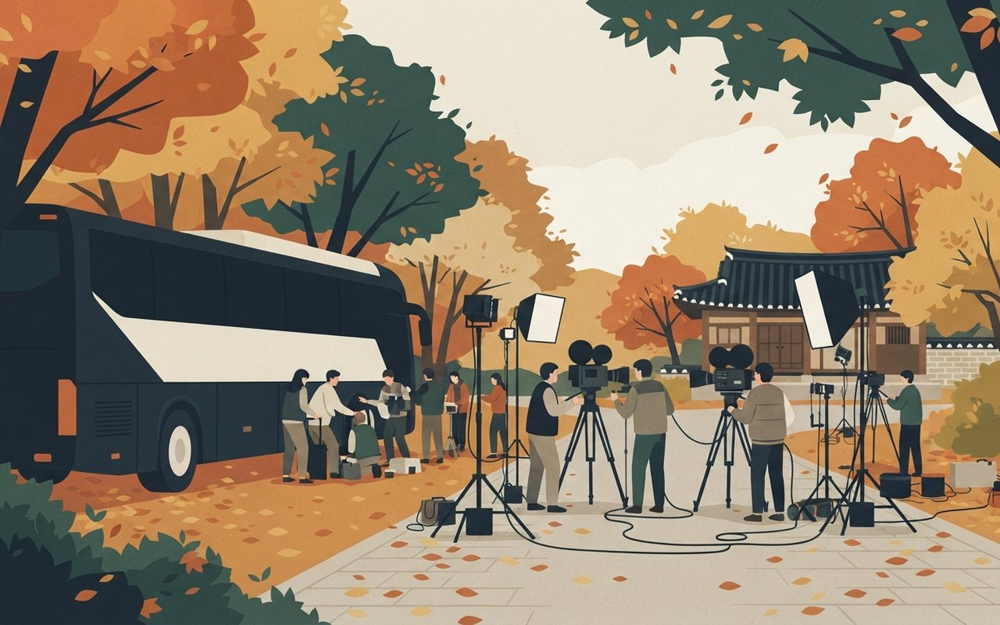
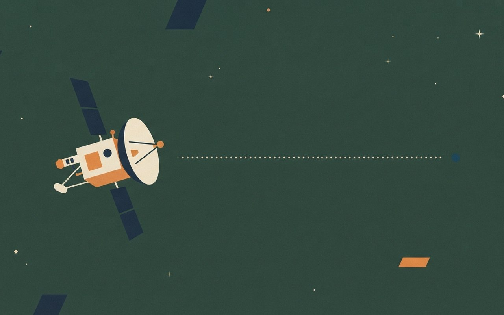

Daily Brief · 데일리 브리프
오늘 수능 55만 명 — 엔비디아 1,158억 달러, 미·중·러 3자회담
2026년 11월 19일 목요일
6 Picks · 분야별
⛅ 서울 · 최저 -1° 최고 4° · 종일 추움, 비·눈은 경기 서해안·충청·호남·제주 중심 ⚠ 변동 가능 · 노컷뉴스 11/18 18:14
오늘 2027학년도 수능이 전국 1,312개 시험장에서 치러집니다. 지원자는 55만 1,864명이고, 시험 중에도 휴대전화를 찾는 재난문자가 예고 없이 갈 수 있습니다. 엔비디아는 3분기 매출 1,158억 달러로 시장 전망을 넘었지만 이사회는 젠슨 황의 복귀를 거부했고, 코스피는 하루 만에 5,000선을 되찾았습니다. 중국 선전에서는 오늘 오후 미·중·러 정상이 첫 3자회담을 하고, 한중 FTA 서비스·투자 협상은 8년 8개월 만에 타결됐습니다. 오늘 오후 4시 대법원은 한덕수·김건희 사건을 선고하고, 보이저 1호는 지구에서 '빛으로 하루' 거리를 처음 넘었습니다.
🎧 낭독 원고 보기
11월 19일 목요일, 데일리 브리프입니다. 오늘은 여섯 가지 소식을 전해 드립니다.
오늘 수능에 55만 명이 넘게 지원했습니다. 이 가운데 졸업생 등 N수생이 19만 6천여 명으로 23년 만에 가장 많습니다. 시험은 전국 1,312개 시험장에서 오전 8시 40분에 시작합니다. 휴대전화를 찾기 위한 재난문자는 1교시 전뿐 아니라 시험 중에도 예고 없이 더 보낼 수 있고, 최대 음량으로 10.5초 동안 경보음이 울립니다. 교육부는 신고나 제보로 부정행위가 확인되면 최대 1억 원의 포상금을 주는 방안을 이번 수능부터 추진합니다.
엔비디아가 3분기 매출 1,158억 달러를 올렸습니다. 시장 전망 1,091억 달러를 넘었고, 1년 전의 두 배 수준입니다. 데이터센터 매출이 전체의 93퍼센트 가까이를 차지했고, 4분기 매출 전망은 1,300억 달러입니다. 하지만 이사회 의장은 젠슨 황을 최고경영자로 다시 세울 뜻이 없다고 밝혔습니다. 실적 덕분에 18일 코스피는 1.99퍼센트 오른 5,067.44에 마감해 하루 만에 5,000선을 되찾았습니다.
미국·중국·러시아 정상이 오늘 오후 중국 선전에서 3자회담을 합니다. YTN에 따르면 냉전이 끝난 1991년 이후 첫 공식 3자 정상회담입니다. 어제 환영행사에서는 트럼프 대통령과 푸틴 대통령이 악수했습니다. 의제는 핵군축과 이란, 우크라이나 문제로 알려졌습니다.
한국과 중국이 자유무역협정 서비스·투자 후속협상을 8년 8개월 만에 실질 타결했습니다. 공동제작 범위가 영화에서 드라마·애니메이션·예능·다큐멘터리로 넓어지고, 중국에 진출한 한국 여행사가 중국인 단체관광객을 직접 모집할 수 있게 됩니다. 중국이 무역협정에 영화와 게임의 최혜국 대우를 넣은 것은 처음입니다. 정식 서명은 아직 남아 있습니다.
추경호 대구시장이 국민의힘 원내대표 시절 국회의 계엄 해제 표결을 방해한 혐의에 대해 1심에서 무죄를 선고받았습니다. 재판부는 윤석열 전 대통령의 협조 요청을 인정하지 않았습니다. YTN에 따르면 특검 구형은 징역 20년이었고, 특검은 판결문을 검토해 항소를 결정합니다. 오늘 오후 4시에는 대법원이 한덕수 전 총리와 김건희 씨 사건을 선고합니다.
보이저 1호가 지구에서 빛의 속도로 하루 걸리는 거리를 처음 넘었습니다. 한국 시각 18일 저녁 7시 16분, 약 260억 킬로미터 지점입니다. 1977년 발사된 지 49년 만이고, 사람이 만든 물체로는 처음입니다.
끝으로 오늘 서울 날씨입니다. 아침 최저 영하 1도, 낮 최고 4도로 종일 춥겠습니다. 비나 눈은 경기 서해안과 충청, 호남, 제주를 중심으로 오겠습니다. 수험생 여러분, 따뜻하게 입고 가세요.
이상으로 오늘의 데일리 브리프를 마칩니다. 자세한 내용과 출처는 카드에서 확인하세요.
試
수능 당일 · 1,312개 시험장
오늘 수능 55만 1,864명 지원, N수생 23년 만 최다 — 재난문자는 시험 중에도 예고 없이, 부정행위 신고 포상금 최대 1억 원 추진
2027학년도 수능이 19일 전국 1,312개 시험장에서 치러진다. 1교시는 오전 8시 40분에 시작한다. 지원자는 55만 1,864명이고, 이 가운데 N수생이 19만 6,473명으로 23년 만에 가장 많다. 지원자의 약 35.6%다. 서울 아침 기온은 영하 1도다(뉴스1).
휴대전화를 찾기 위한 재난문자는 당초 1교시 전(08:25~08:30) 한 번만 보낼 계획이었지만, 시험 중에도 예고 없이 더 보내기로 했다. 경보음은 최대 음량(최소 40㏈ 이상)으로 10.5초 동안 울린다. 재난문자로 부정행위가 적발된 시험실의 시험 시간을 2~3분 늘리는 방안은 검토 중이다(경향신문). 교육부는 18일 신고·제보가 부정행위로 확인되면 최대 1억 원의 포상금 지급을 추진하고, 이번 수능부터 바로 적용하는 방안도 추진한다고 밝혔다. 총리가 이끄는 범정부 TF는 20일 가동한다(경향신문).
- 수능19일(목) · 1교시 08:40 · 전국 1,312개 시험장
- 지원자55만 1,864명 · N수생 19만 6,473명(23년 만 최다, 약 35.6%)
- 재난문자1교시 전 08:25~08:30 + 시험 중 예고 없이 추가 · 최대 음량(최소 40㏈ 이상) 10.5초
- 포상금부정행위 확인 시 최대 1억 원 지급 추진(이번 수능부터) · 범정부 TF 20일 가동
- 검토 중재난문자로 부정행위가 적발된 시험실 시험 시간 2~3분 연장
Marketing View · 마케터의 시선
N수생이 지원자 셋 중 한 명꼴이다. 수능 뒤 할인·이벤트의 대상을 '고3'으로만 잡으면 이 큰 집단을 놓친다. 수험표 한 장을 조건으로 거는 방식이 나이와 관계없이 통하는 이유다.
뉴스1 — 수능 지원자·시험장 경향신문 — 시험 중 재난문자 경향신문 — 포상금 최대 1억
뉴스1(11/19 05:00)·경향신문(11/18 21:29·22:12) · 포상금은 '지급 추진' 단계(YTN 11/19 02:10 제목도 같음) · 35.6%는 두 숫자로 계산한 값 (확인 2026-11-19)
오늘 수능 55만 명,
N수생 23년 만 최다
전국 1,312개 시험장에서 오전 8시 40분에 시작해요. 휴대전화를 찾는 재난문자는 시험 중에도 예고 없이 10.5초 동안 울릴 수 있어요.
35.6|19만 6,473명|N수생 지원자|전체 지원자 55만 1,864명 중
19만 6,473명|N수생 지원자 · 23년 만 최다
算
반도체 · 3분기 실적
엔비디아 3분기 매출 1,158억 달러, 전망 넘었다 — 이사회는 "젠슨 황 재선임 뜻 없다", 코스피 하루 만에 5,067.44로 5,000선 회복
엔비디아의 3분기(10월 25일로 끝난 분기) 매출은 1,158억 달러(약 155조 원)로 LSEG 전망치 1,091억 달러를 넘었다. 전 분기보다 20% 늘었고, 전년 대비 증가율은 100%(경향신문)·103%(알자지라)로 매체마다 다르게 적었다. 데이터센터 매출이 1,072억 달러로 전체의 약 93%였고, 4분기 매출 전망은 1,300억 달러다(경향신문). 순이익은 649억 달러였다(알자지라).
하비 존스 이사회 의장은 "이사회는 만장일치로 사임을 받아들였고 젠슨을 CEO로 재선임할 뜻이 없다"고 밝혔다(알자지라). 주가는 실적 발표 뒤 시간외에서 4.8% 올랐다(알자지라). 18일 코스피는 98.96포인트(+1.99%) 오른 5,067.44에 마감해 하루 만에 5,000선을 되찾았다. 코스닥은 662.81(+1.96%), SK하이닉스는 4.19% 오른 114만 4,000원, 삼성전자는 2.31% 오른 19만 4,700원이었다(뉴스핌).
- 3분기 매출1,158억 달러(약 155조 원) · LSEG 전망 1,091억 달러 · 전 분기 대비 +20%
- 세부데이터센터 1,072억 달러(약 93%) · 순이익 649억 달러
- 4분기 전망매출 1,300억 달러
- 경영이사회 의장 "황 재선임 뜻 없다" · 시간외 주가 +4.8%
- 코스피(18일)5,067.44(+98.96p, +1.99%) · 코스닥 662.81(+1.96%) · SK하이닉스 114만 4,000원(+4.19%) · 삼성전자 19만 4,700원(+2.31%)
- 불일치전년 대비 증가율 100%(경향신문)·103%(알자지라)
Marketing View · 마케터의 시선
숫자는 기대를 넘었는데 메시지는 '창업자 없는 엔비디아'다. 시간외 4.8% 상승은 정규장 결과가 아니어서, 시장이 실적과 경영 불확실성 중 어느 쪽에 더 무게를 뒀는지는 18일(현지) 정규장 종가로 확인해야 한다. 한국 반도체주가 하루 만에 반등한 것도 그 첫 신호에 기댄 셈이다.
경향신문 — 엔비디아 3분기 실적 Al Jazeera — 이사회 '복귀 없다' 뉴스핌 — 코스피 마감
경향신문(11/18 15:49)·Al Jazeera(11/18)·뉴스핌(11/18 15:47) · 매출 1,158억 달러·4분기 전망 두 매체 일치 · 코스피 종가는 한국경제(11/18 15:45)와 일치, 수급은 잠정치라 뺌 (확인 2026-11-19)
엔비디아 1,158억 달러,
이사회 "황 복귀 없다"
3분기 매출이 시장 전망 1,091억 달러를 넘었어요. 이사회는 젠슨 황 재선임을 거부했고, 코스피는 하루 만에 5,000선을 되찾았어요.
LSEG 전망:1091|3분기 실제:1158|4분기 전망:1300
약 93%|데이터센터 매출 비중 · 1,072억 달러
會
국제 · 선전 APEC
미·중·러 정상, 오늘 오후 선전에서 첫 3자회담 — 냉전 뒤 첫 공식 3자 회담, 어제는 트럼프·푸틴 악수
18일 중국 광둥성 선전 국제교류센터에서 열린 APEC 환영행사에서 트럼프 미국 대통령과 푸틴 러시아 대통령이 악수하고 짧게 대화했다. 두 정상이 직접 만난 것은 지난해 8월 알래스카 회담 뒤 처음이다. 미·중·러 3자회담은 19일 오후 선전에서 열린다(경향신문).
YTN은 1991년 냉전이 끝난 뒤 첫 공식 3자 정상회담이며, 핵군축·이란·우크라이나가 의제이고 북핵이 언급될 가능성도 있다고 전했다. 젤렌스키 우크라이나 대통령은 지난달 21일 "우리에 관한 논의를 우리 없이 진행하지 말아 달라"고 했다(YTN). 회담 결과는 발행 시점에 나오지 않았다.
- 일정19일(목) 오후 · 중국 광둥성 선전(APEC 계기)
- 전날18일 환영행사서 트럼프·푸틴 악수 · 지난해 8월 알래스카 회담 뒤 첫 대면
- 의미1991년 냉전 종식 뒤 첫 공식 3자 정상회담(YTN)
- 의제핵군축 · 이란 · 우크라이나 · 북핵 언급 가능성
- 상태회담 전 — 결과 미발표
Context · 맥락 읽기
전쟁 당사국인 우크라이나가 빠진 자리에서 우크라이나가 의제에 오른다. 오늘은 회담이 열린다는 사실까지만 확인됐고, 합의문이 나올지는 아직 모른다. 북핵이 실제로 다뤄지는지가 한국에는 가장 중요한 대목이다.
경향신문 — 트럼프·푸틴 악수 YTN — 첫 공식 3자회담
경향신문(11/18 21:34)·YTN(11/19 05:15) · 19일 회담 두 매체 일치 · '오후'는 경향신문 기준 · '냉전 뒤 첫 공식 3자 회담'·의제는 YTN 기준 (확인 2026-11-19)
미·중·러 정상,
오늘 선전서 첫 3자회담
어제 APEC 환영행사에서 트럼프와 푸틴이 악수했어요. 오늘 오후 회담의 의제는 핵군축·이란·우크라이나이고, 결과는 아직 나오지 않았어요.
미·중·러 정상|19일 오후 · 선전|핵군축·이란·우크라이나
1991년|냉전이 끝난 해 · 그 뒤 첫 공식 3자 회담
貿
통상 · 서비스·투자
한중 FTA 서비스·투자 후속협상, 8년 8개월 만에 실질 타결 — 영화·게임 '최혜국 대우', 한국 여행사 중국인 단체관광객 직접 모집
산업부가 18일 한중 자유무역협정(FTA) 서비스·투자 후속협상의 '실질 타결'을 선언했다. 2018년 3월 협상을 시작한 지 8년 8개월 만으로, APEC 계기 한중 정상회담에서 발표됐다(YTN). 중국이 무역협정에 영화·게임 최혜국 대우와 온라인 게임·영화 사전심의 비차별을 넣은 것은 처음이다(경향신문).
공동제작 범위는 영화에서 드라마·애니메이션·예능·다큐멘터리로 넓어진다. 중국에 진출한 한국 여행사가 중국인 단체관광객을 직접 모집할 수 있게 되고(YTN), 베이징 등 23개 지역에 설립된 한국 여행사는 중국 거주 중국인·외국인의 해외여행을 주선할 수 있다(경향신문). 김정관 장관은 "K콘텐츠, 관광, 금융, 유통 등"에 "안정적인 제도적 기반이 마련되었다"고 했다(경향신문). 법률 검토와 정식 서명은 남아 있다.
- 단계실질 타결(18일) · 법률 검토·정식 서명 남음
- 기간2018년 3월 협상 시작 → 8년 8개월
- 콘텐츠영화·게임 최혜국 대우 · 온라인 게임·영화 사전심의 비차별(중국 무역협정 첫 사례) · 공동제작 영화 → 드라마·애니·예능·다큐
- 관광중국 23개 지역에 설립된 한국 여행사, 중국 거주자 해외여행(아웃바운드) 주선 · 중국인 단체관광객 직접 모집
Marketing View · 마케터의 시선
'사전심의 비차별'은 콘텐츠 업계에 관세보다 큰 문턱이었다. 다만 실질 타결은 서명 전 단계이고, 한한령 해제가 확정된 것도 아니다. 콘텐츠·여행 기업이라면 지금은 발표보다 서명·발효 일정을 따라가는 편이 맞다.
YTN — 8년 8개월 만 타결 경향신문 — 영화·게임 최혜국 대우
YTN(11/18 23:03)·경향신문(11/18 17:40) · 타결·공동제작·여행사 두 매체 교차 · 23개 지역·최혜국 대우·장관 발언은 경향신문 기준 (확인 2026-11-19)
한중 FTA 후속협상,
8년 8개월 만에 타결
중국이 영화·게임에 최혜국 대우를 약속했어요. 공동제작은 드라마·예능까지 넓어지고, 한국 여행사가 중국인 단체관광객을 직접 모집해요.
A Korean TV drama filming set with cameras and lighting stands beside a parked tour bus under autumn trees, flat illustration, no people faces, no text, no logos, no flags

23개 지역|한국 여행사 아웃바운드 관광 허용
判
재판 · 계엄 사건
추경호 '계엄 해제 표결 방해' 1심 무죄 — 구형 징역 20년, 오늘 오후 4시엔 대법원이 한덕수·김건희 선고
서울중앙지법 형사합의34부(재판장 한성진)는 18일 국회의 계엄 해제 표결을 방해한 혐의(내란 중요임무 종사)로 기소된 추경호 대구시장(당시 국민의힘 원내대표)에게 무죄를 선고했다. 특검 구형은 징역 20년이었다. 재판부는 윤석열 전 대통령의 협조 요청이 있었다는 공소사실을 인정하지 않았고, 특검은 판결문을 검토해 항소를 결정한다(YTN). 판결문은 101쪽이다(경향신문).
대법원은 19일 오후 4시 한덕수 전 국무총리와 김건희 씨 사건의 상고심을 선고한다. 한 전 총리는 1심 징역 23년, 2심 징역 15년을 받았고 8월 전원합의체에 넘겨졌다. 김 씨는 1심 징역 1년 8개월, 2심 징역 4년·벌금 5,000만 원이었고, 명태균 여론조사 혐의는 1·2심 모두 무죄였다(YTN).
- 추경호 1심18일 무죄 · 서울중앙지법 형사합의34부 · 혐의 내란 중요임무 종사 · 구형 징역 20년(YTN) · 판결문 101쪽
- 다음특검, 판결문 검토 뒤 항소 결정
- 오늘 16:00대법원 상고심 선고 — 한덕수(1심 23년 → 2심 15년, 전원합의체) · 김건희(1심 1년 8개월 → 2심 4년·벌금 5,000만 원)
Context · 맥락 읽기
1심 무죄는 확정이 아니다. 특검이 항소하면 2심이 남는다. 오늘 대법원 선고는 한 전 총리 사건이 전원합의체로 넘어간 뒤 나오는 결론이라, 계엄 관련 다른 재판에도 기준이 될 수 있다. 결과는 오후 4시 이후에 나온다.
YTN — 추경호 1심 무죄 경향신문 — 판결 내용 YTN — 오늘 대법원 선고
YTN(11/18 22:28·11/19 00:52)·경향신문(11/18 18:20) · 무죄·혐의 두 매체 일치 · 구형 20년은 YTN 단일 · 대법원 선고 결과는 발행 시점 미정 (확인 2026-11-19)
추경호 1심 무죄,
오늘 대법원 한덕수 선고
특검은 징역 20년을 구형했지만 1심은 무죄였고, 특검은 항소를 검토해요. 오늘 오후 4시엔 대법원이 한덕수·김건희 사건을 선고해요.
18일 1심 무죄|19일 대법원 선고
오후 4시|오늘 대법원 상고심 선고
宙
우주 · 보이저 1호
보이저 1호, 지구에서 '빛으로 하루' 거리 처음 넘었다 — 한국 시각 18일 19시 16분, 약 260억 km · 발사 49년 만
미국 항공우주국(NASA)의 보이저 1호가 한국 시각 18일 오후 7시 16분 7초 지구에서 1광일(빛이 하루 동안 가는 거리) 지점을 지났다. 1광일은 약 259억 km다(경향신문). 1977년 9월 5일 발사돼 시속 약 6만 km로 날고 있으며, 발사 49년 만이다.
스페이스닷컴은 거리를 약 160억 마일(약 260억 km)로 적고, 사람이 만든 물체로는 처음이라고 전했다. 린다 스필커 보이저 프로젝트 과학자는 "지구와 보이저는 빛의 속도로 정확히 24시간 떨어져 있다"고 했다(스페이스닷컴).
- 통과 시각한국 시각 18일 19:16:07(미국 동부 18일 05:16)
- 거리1광일 · 약 259억 km(경향신문)·약 260억 km(스페이스닷컴)
- 보이저 1호1977년 9월 5일 발사 · 시속 약 6만 km · 발사 49년 만
- 의미사람이 만든 물체로 처음
Marketing View · 마케터의 시선
'260억 km'보다 '빛으로 하루'가 훨씬 잘 전해진다. 지금 보이저에 보낸 명령은 하루 뒤에 닿고, 답도 하루 뒤에 온다. 큰 숫자를 사람이 겪어 본 시간 단위로 바꾸는 것이 과학 소식을 퍼뜨리는 가장 쉬운 방법이다.
경향신문 — 보이저 1광일 Space.com — 1 light-day
경향신문(11/18 19:16)·Space.com(11/18) · 시각 두 매체 일치 · 거리 표기 259억·260억 km로 다름 · 49년은 발사일로 계산 (확인 2026-11-19)
보이저 1호, 지구에서
빛으로 하루 거리 넘었다
한국 시각 18일 저녁 7시 16분, 약 260억 km 지점을 지났어요. 사람이 만든 물체로는 처음이고, 1977년 발사 뒤 49년 만이에요.
약 260억 km|지구와 보이저 1호 사이 · 1977년 발사
A small space probe with a large dish antenna drifting in deep dark space, with a faint tiny blue dot of Earth far behind and a long dotted line between them, conceptual schematic, not a real photograph, no text
